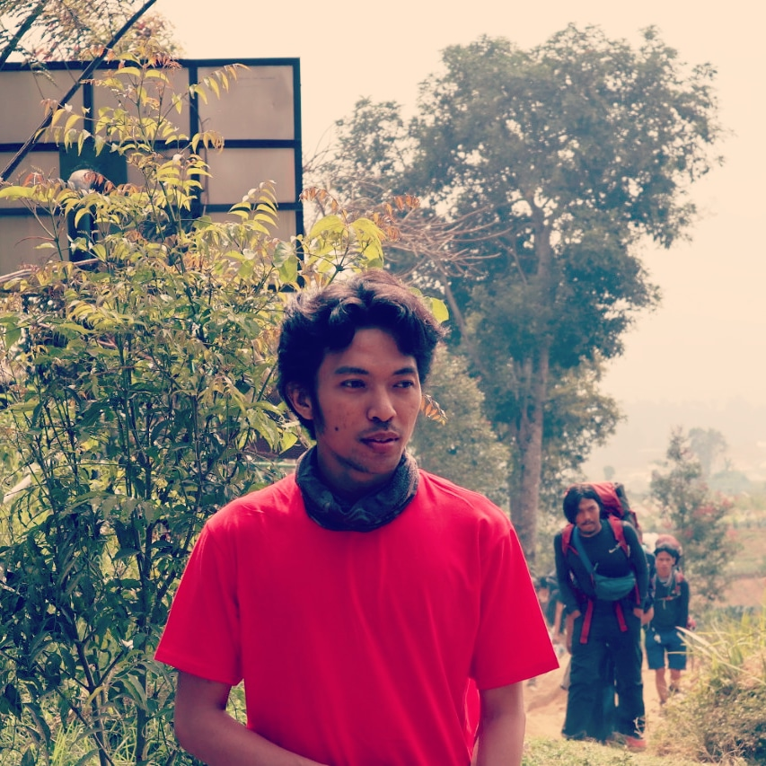

Halo, nama saya
Aditya Teguh Laksono

Tentang Saya
Personal informasi
Tempat, Tgl. Lahir
: Jakarta,6 Maret 1994
Jenis kelamin
: Laki-laki
Agama
: Islam
Kebangsaan
: Indonesia
Status
: Belum Kawin
Alamat
: Jl.Cempaka warna No.37 Jakarta Pusat 10510
Hobi
: Hiking, Traveling
Kontak
Telepon
: 0812-9795-8250
Email
: adityateguhlaksono@gmail.com
Instagram
: @adityatl_
Pendidikan
1999-2005 : SDS Islam Rawasari Jakarta
2005-2008 : SMP N 47 Jakarta
2008-2011 : SMK N 53 Jakarta
2016-Lulus : Universitas Mercu Buana
Pengalaman
PT.Etobee Teknologi Indonesia
PT.Indomarco Prismatama (Indomaret Group)
PT.Administrasi Medika (AdMedika)
© 2019 — Aditya Teguh Laksono